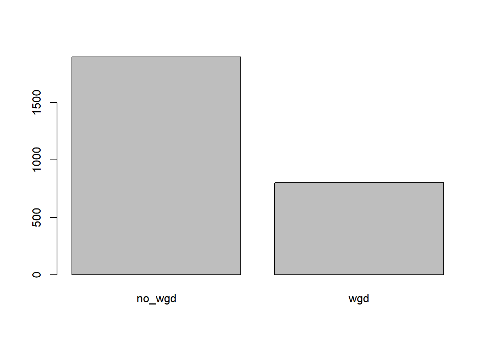

R output
akh
2022-10-27
Last updated: 2022-11-03
Checks: 6 1
Knit directory: myproject/
This reproducible R Markdown analysis was created with workflowr (version 1.7.0). The Checks tab describes the reproducibility checks that were applied when the results were created. The Past versions tab lists the development history.
Great! Since the R Markdown file has been committed to the Git repository, you know the exact version of the code that produced these results.
Great job! The global environment was empty. Objects defined in the global environment can affect the analysis in your R Markdown file in unknown ways. For reproduciblity it’s best to always run the code in an empty environment.
The command set.seed(20221022) was run prior to running
the code in the R Markdown file. Setting a seed ensures that any results
that rely on randomness, e.g. subsampling or permutations, are
reproducible.
Great job! Recording the operating system, R version, and package versions is critical for reproducibility.
Nice! There were no cached chunks for this analysis, so you can be confident that you successfully produced the results during this run.
Using absolute paths to the files within your workflowr project makes it difficult for you and others to run your code on a different machine. Change the absolute path(s) below to the suggested relative path(s) to make your code more reproducible.
| absolute | relative |
|---|---|
| ~/Desktop/myproject/data/pancan_pcawg_2020/data_clinical_sample.txt | data/pancan_pcawg_2020/data_clinical_sample.txt |
| ~/Desktop/myproject/data/pancan_pcawg_2020/data_clinical_patient.txt | data/pancan_pcawg_2020/data_clinical_patient.txt |
| ~/Desktop/myproject/data/pancan_pcawg_2020_clinical_data.txt | data/pancan_pcawg_2020_clinical_data.txt |
Great! You are using Git for version control. Tracking code development and connecting the code version to the results is critical for reproducibility.
The results in this page were generated with repository version 86ab8b2. See the Past versions tab to see a history of the changes made to the R Markdown and HTML files.
Note that you need to be careful to ensure that all relevant files for
the analysis have been committed to Git prior to generating the results
(you can use wflow_publish or
wflow_git_commit). workflowr only checks the R Markdown
file, but you know if there are other scripts or data files that it
depends on. Below is the status of the Git repository when the results
were generated:
Ignored files:
Ignored: .Rhistory
Ignored: .Rproj.user/
Ignored: R-output_files/
Untracked files:
Untracked: data/pancan_pcawg_2020/
Untracked: data/pancan_pcawg_2020_clinical_data.txt
Untracked: site_libs/
Note that any generated files, e.g. HTML, png, CSS, etc., are not included in this status report because it is ok for generated content to have uncommitted changes.
These are the previous versions of the repository in which changes were
made to the R Markdown (analysis/R-output.Rmd) and HTML
(docs/R-output.html) files. If you’ve configured a remote
Git repository (see ?wflow_git_remote), click on the
hyperlinks in the table below to view the files as they were in that
past version.
| File | Version | Author | Date | Message |
|---|---|---|---|---|
| html | 86ab8b2 | Akhileshpandey87 | 2022-11-03 | Build site. |
| Rmd | 77ff564 | Akhileshpandey87 | 2022-11-03 | wflow_publish("analysis/R-output.Rmd") |
| Rmd | d42be1f | Akhileshpandey87 | 2022-11-01 | wflow_git_commit(all = TRUE) |
| html | d42be1f | Akhileshpandey87 | 2022-11-01 | wflow_git_commit(all = TRUE) |
| html | c8855f9 | Akhileshpandey87 | 2022-11-01 | Build site. |
| html | 6c06e13 | Akhileshpandey87 | 2022-11-01 | Build site. |
| Rmd | 1b9282d | Akhileshpandey87 | 2022-11-01 | wflow_publish("analysis/R-output.Rmd") |
| html | 2071ca4 | Akhileshpandey87 | 2022-10-30 | Build site. |
| Rmd | 6e9c467 | Akhileshpandey87 | 2022-10-30 | wflow_publish("analysis/R-output.Rmd") |
| html | 5a81c51 | Akhileshpandey87 | 2022-10-30 | Build site. |
| Rmd | dddd215 | Akhileshpandey87 | 2022-10-30 | wflow_publish("analysis/R-output.Rmd") |
R Markdown
This is an R Markdown document. Markdown is a simple formatting syntax for authoring HTML, PDF, and MS Word documents. For more details on using R Markdown see http://rmarkdown.rstudio.com.
When you click the Knit button a document will be generated that includes both content as well as the output of any embedded R code chunks within the document. You can embed an R code chunk like this:
Note that the echo = FALSE parameter was added to the
code chunk to prevent printing of the R code that generated the
plot.
dat <- read.delim("~/Desktop/myproject/data/pancan_pcawg_2020/data_clinical_sample.txt",header=TRUE,stringsAsFactor = TRUE,comment.char = "#")
head(dat) SAMPLE_ID PATIENT_ID PROJECT_CODE STAGE GRADE ICD_10 ORGAN_SYSTEM
1 SP1003 DO496 BLCA-US <NA> <NA> C67.9 URINARY BLADDER
2 SP10084 DO4766 BRCA-US <NA> <NA> C50.9 BREAST
3 SP1009 DO498 BLCA-US <NA> <NA> C67.9 URINARY BLADDER
4 SP10150 DO4796 BRCA-US <NA> <NA> C50.9 BREAST
5 SP101515 DO46325 OV-AU III G3 C48.2 OVARY
6 SP101519 DO46327 OV-AU III G3 C56 OVARY
HISTOLOGY_ABBREVIATION HISTOLOGY HISTOLOGY_TIER1
1 Bladder-TCC Papillary trans. cell carcinoma ENDODERM
2 Breast-AdenoCA Infiltrating duct carcinoma, NOS ECTODERM
3 Bladder-TCC Transitional cell carcinoma, NOS ENDODERM
4 Breast-AdenoCA Infiltrating duct carcinoma, NOS ECTODERM
5 Ovary-AdenoCA Serous cystadenocarcinoma, NOS MESODERM
6 Ovary-AdenoCA Serous cystadenocarcinoma, NOS MESODERM
HISTOLOGY_TIER2 HISTOLOGY_TIER3
1 Bladder Transitional cell carcinoma
2 Breast Adenocarcinoma
3 Bladder Transitional cell carcinoma
4 Breast Adenocarcinoma
5 Ovary Adenocarcinoma
6 Ovary Adenocarcinoma
HISTOLOGY_TIER4 TUMOR_SAMPLE_HISTOLOGY_CODE
1 Transitional cell carcinoma, papillary 8130/3
2 Infiltrating duct carcinoma 8500/3
3 Transitional cell carcinoma 8120/3
4 Infiltrating duct carcinoma 8500/3
5 Serous cystadenocarcinoma 8441/3
6 Serous cystadenocarcinoma 8441/3
CELLULARITY PURITY PLOIDY PURITY_CONFUGURATION WGD SAMPLE_TYPE
1 NA 0.613 3.228 0.016 wgd Primary
2 90 0.693 3.986 0.002 wgd Primary
3 80 0.827 2.002 0.028 no_wgd Primary
4 80 0.727 3.359 0.031 wgd Primary
5 73 0.540 2.112 0.023 no_wgd Primary
6 77 0.478 2.623 0.010 wgd Primary
CANCER_TYPE CANCER_TYPE_DETAILED ONCOTREE_CODE ICGC_SAMPLE_ID
1 Bladder Cancer Bladder Squamous Cell Carcinoma BLSC SA4557
2 Breast Cancer Breast Invasive Ductal Carcinoma IDC SA48667
3 Bladder Cancer Bladder Squamous Cell Carcinoma BLSC SA4666
4 Breast Cancer Breast Invasive Ductal Carcinoma IDC SA49610
5 Ovarian Cancer Serous Ovarian Cancer SOC SA505244
6 Ovarian Cancer Serous Ovarian Cancer SOC SA505270
SEQUENCING_TYPE SAMPLE_CLASS ANCESTRY_PRIMARY TMB_NONSYNONYMOUS
1 WGS Tumor EUR 8.433333
2 WGS Tumor EUR 2.066667
3 WGS Tumor EUR 4.000000
4 WGS Tumor EUR 2.500000
5 WGS Tumor EUR 2.066667
6 WGS Tumor EUR 2.100000tail(dat) SAMPLE_ID PATIENT_ID PROJECT_CODE STAGE GRADE ICD_10 ORGAN_SYSTEM
2917 SP99329 DO45301 LIRI-JP 2 <NA> C22 LIVER
2918 SP99333 DO45303 LIRI-JP 3 <NA> C22 LIVER
2919 SP99337 DO45305 LIRI-JP 4 <NA> C22 LIVER
2920 SP99341 DO45307 LIRI-JP 4 <NA> C22 LIVER
2921 SP99345 DO45309 LIRI-JP 3 <NA> C22 LIVER
2922 SP9979 DO4719 BRCA-US <NA> <NA> C50.9 BREAST
HISTOLOGY_ABBREVIATION HISTOLOGY HISTOLOGY_TIER1
2917 Biliary-AdenoCA Cholangiocarcinoma ENDODERM
2918 Biliary-AdenoCA Cholangiocarcinoma ENDODERM
2919 Biliary-AdenoCA Cholangiocarcinoma ENDODERM
2920 Biliary-AdenoCA Cholangiocarcinoma ENDODERM
2921 Biliary-AdenoCA Cholangiocarcinoma ENDODERM
2922 Breast-AdenoCA Infiltrating duct carcinoma, NOS ECTODERM
HISTOLOGY_TIER2 HISTOLOGY_TIER3 HISTOLOGY_TIER4
2917 Biliary Adenocarcinoma Cholangiocarcinoma
2918 Biliary Adenocarcinoma Cholangiocarcinoma
2919 Biliary Adenocarcinoma Cholangiocarcinoma
2920 Biliary Adenocarcinoma Cholangiocarcinoma
2921 Biliary Adenocarcinoma Cholangiocarcinoma
2922 Breast Adenocarcinoma Infiltrating duct carcinoma
TUMOR_SAMPLE_HISTOLOGY_CODE CELLULARITY PURITY PLOIDY PURITY_CONFUGURATION
2917 8160/3 NA 0.310 1.917 0.015
2918 8160/3 NA 0.680 1.849 0.001
2919 8160/3 NA 0.796 1.843 0.006
2920 8160/3 NA 0.330 2.108 0.084
2921 8160/3 NA 0.221 1.927 0.090
2922 8500/3 NA 0.447 2.152 0.023
WGD SAMPLE_TYPE CANCER_TYPE CANCER_TYPE_DETAILED
2917 no_wgd Primary Hepatobiliary Cancer Cholangiocarcinoma
2918 no_wgd Primary Hepatobiliary Cancer Cholangiocarcinoma
2919 no_wgd Primary Hepatobiliary Cancer Cholangiocarcinoma
2920 no_wgd Primary Hepatobiliary Cancer Cholangiocarcinoma
2921 no_wgd Primary Hepatobiliary Cancer Cholangiocarcinoma
2922 no_wgd Primary Breast Cancer Breast Invasive Ductal Carcinoma
ONCOTREE_CODE ICGC_SAMPLE_ID SEQUENCING_TYPE SAMPLE_CLASS ANCESTRY_PRIMARY
2917 CHOL SA501614 WGS Tumor ASN
2918 CHOL SA501618 WGS Tumor ASN
2919 CHOL SA501622 WGS Tumor ASN
2920 CHOL SA501626 WGS Tumor ASN
2921 CHOL SA501630 WGS Tumor ASN
2922 IDC SA491910 WGS Tumor <NA>
TMB_NONSYNONYMOUS
2917 2.1000000
2918 0.7333333
2919 0.8666667
2920 1.1333333
2921 0.9333333
2922 0.9333333class(dat)[1] "data.frame"dim(dat)[1] 2922 28typeof(dat)[1] "list"str(dat)'data.frame': 2922 obs. of 28 variables:
$ SAMPLE_ID : Factor w/ 2922 levels "SP1003","SP10084",..: 1 2 3 4 5 6 7 8 9 10 ...
$ PATIENT_ID : Factor w/ 2583 levels "DO1000","DO1001",..: 1828 1611 1836 1624 1431 1432 1433 1434 1434 1435 ...
$ PROJECT_CODE : Factor w/ 47 levels "BLCA-US","BOCA-UK",..: 1 5 1 5 31 31 31 31 31 31 ...
$ STAGE : Factor w/ 121 levels "1","1a","1b",..: NA NA NA NA 21 21 21 21 NA 21 ...
$ GRADE : Factor w/ 26 levels "2 - Moderately differentiated",..: NA NA NA NA 14 14 14 14 NA 14 ...
$ ICD_10 : Factor w/ 136 levels "0","C01","C02.9",..: 107 86 107 86 69 93 93 93 93 93 ...
$ ORGAN_SYSTEM : Factor w/ 23 levels "BLOOD, BONE MARROW, & HEMATOPOIETIC SYS",..: 22 5 22 5 15 15 15 15 NA 15 ...
$ HISTOLOGY_ABBREVIATION : Factor w/ 39 levels "Biliary-AdenoCA",..: 2 8 2 8 30 30 30 30 NA 30 ...
$ HISTOLOGY : Factor w/ 68 levels "Acinar cell carcinoma",..: 57 32 66 32 64 64 64 7 7 64 ...
$ HISTOLOGY_TIER1 : Factor w/ 4 levels "ECTODERM","ENDODERM",..: 2 1 2 1 3 3 3 3 NA 3 ...
$ HISTOLOGY_TIER2 : Factor w/ 21 levels "Biliary","Bladder",..: 2 4 2 4 15 15 15 15 NA 15 ...
$ HISTOLOGY_TIER3 : Factor w/ 25 levels "Acute myeloid leukemia",..: 25 2 25 2 2 2 2 2 NA 2 ...
$ HISTOLOGY_TIER4 : Factor w/ 66 levels "Acinar cell carcinoma",..: 66 38 65 38 61 61 61 4 NA 61 ...
$ TUMOR_SAMPLE_HISTOLOGY_CODE: Factor w/ 66 levels "8022/3","8050/3",..: 6 28 5 28 24 24 24 7 NA 24 ...
$ CELLULARITY : int NA 90 80 80 73 77 90 84 99 82 ...
$ PURITY : num 0.613 0.693 0.827 0.727 0.54 0.478 0.71 0.789 NA 0.498 ...
$ PLOIDY : num 3.23 3.99 2 3.36 2.11 ...
$ PURITY_CONFUGURATION : num 0.016 0.002 0.028 0.031 0.023 0.01 0.016 0.012 NA 0.018 ...
$ WGD : Factor w/ 2 levels "no_wgd","wgd": 2 2 1 2 1 2 2 1 NA 2 ...
$ SAMPLE_TYPE : Factor w/ 4 levels "Cell line","Local Recurrence",..: 4 4 4 4 4 4 4 4 2 4 ...
$ CANCER_TYPE : Factor w/ 30 levels "Acute myeloid leukemia",..: 2 4 2 4 23 23 23 23 23 23 ...
$ CANCER_TYPE_DETAILED : Factor w/ 74 levels "Acinar Cell Carcinoma of the Pancreas",..: 6 7 6 7 70 70 70 58 58 70 ...
$ ONCOTREE_CODE : Factor w/ 71 levels "ADMA","AMBL",..: 5 30 5 30 65 65 65 53 53 65 ...
$ ICGC_SAMPLE_ID : Factor w/ 2583 levels "SA100232","SA100712",..: 748 789 767 852 1030 1033 1035 1036 NA 1037 ...
$ SEQUENCING_TYPE : Factor w/ 2 levels "WGS","WGS+RNA-Seq": 1 1 1 1 1 1 1 1 NA 1 ...
$ SAMPLE_CLASS : Factor w/ 2 levels "Cell line","Tumor": 2 2 2 2 2 2 2 2 2 2 ...
$ ANCESTRY_PRIMARY : Factor w/ 5 levels "AFR","AMR","ASN",..: 4 4 4 4 4 4 4 3 NA 4 ...
$ TMB_NONSYNONYMOUS : num 8.43 2.07 4 2.5 2.07 ...table(dat$WGD)
no_wgd wgd
1900 803 table(dat$WGD,dat$SEQUENCING_TYPE)
WGS WGS+RNA-Seq
no_wgd 1799 4
wgd 777 3plot(dat$WGD)
plot(dat$WGD,dat$SEQUENCING_TYPE)summary(dat) SAMPLE_ID PATIENT_ID PROJECT_CODE STAGE
SP1003 : 1 DO51954: 10 LIRI-JP: 260 unknown: 148
SP10084 : 1 DO51964: 9 PBCA-DE: 230 2 : 119
SP1009 : 1 DO52509: 6 PACA-AU: 166 III : 104
SP10150 : 1 DO52510: 6 CLLE-ES: 158 3 : 75
SP101515: 1 DO52512: 6 PACA-CA: 143 A : 66
SP101519: 1 DO52513: 6 RECA-EU: 123 (Other):1112
(Other) :2916 (Other):2879 (Other):1842 NA's :1298
GRADE ICD_10
G3 : 75 C61 : 275
G2 : 52 C22 : 260
II : 50 C25.0 : 212
2 - Moderately differentiated: 37 C91.1 : 158
G4 : 37 0 : 142
(Other) : 148 C71 : 141
NA's :2523 (Other):1734
ORGAN_SYSTEM
LIVER : 336
PANCREAS : 313
BRAIN, & CRANIAL NERVES, & SPINAL CORD, (EXCL. VENTRICLE, CEREBELLUM): 287
BREAST : 211
PROSTATE GLAND : 199
(Other) :1237
NA's : 339
HISTOLOGY_ABBREVIATION
Liver-HCC : 314
Panc-AdenoCA : 232
Prost-AdenoCA : 199
Breast-AdenoCA: 195
Kidney-RCC : 143
(Other) :1500
NA's : 339
HISTOLOGY
Adenocarcinoma, NOS : 467
Infiltrating duct carcinoma, NOS : 402
Hepatocellular carcinoma, NOS : 315
Clear cell adenocarcinoma, NOS : 160
Chronic lymphocytic leukemia/small lymphocytic lymphoma: 158
(Other) :1344
NA's : 76
HISTOLOGY_TIER1 HISTOLOGY_TIER2
ECTODERM : 211 Liver : 314
ENDODERM :1232 Pancreas: 313
MESODERM : 746 CNS : 287
NEURAL_CREST: 394 Breast : 211
NA's : 339 Prostate: 199
(Other) :1259
NA's : 339
HISTOLOGY_TIER3
Adenocarcinoma :1118
Hepatocellular carcinoma : 314
Renal cell carcinoma (proximal tubules): 143
Medulloblastoma : 141
Squamous cell carcinoma : 121
(Other) : 746
NA's : 339
HISTOLOGY_TIER4 TUMOR_SAMPLE_HISTOLOGY_CODE
Adenocarcinoma : 426 8140/3 : 430
Hepatocellular carcinoma : 305 8500/3 : 348
Infiltrating duct carcinoma: 191 8170/3 : 305
Pancreatic ductal carcinoma: 157 8070/3 : 120
Serous cystadenocarcinoma : 120 8441/3 : 120
(Other) :1384 (Other):1260
NA's : 339 NA's : 339
CELLULARITY PURITY PLOIDY PURITY_CONFUGURATION
Min. : 12.00 Min. :0.1300 Min. :1.283 Min. :0.0000
1st Qu.: 71.00 1st Qu.:0.4730 1st Qu.:1.926 1st Qu.:0.0060
Median : 84.00 Median :0.6590 Median :2.000 Median :0.0130
Mean : 80.63 Mean :0.6401 Mean :2.365 Mean :0.0211
3rd Qu.: 95.00 3rd Qu.:0.8240 3rd Qu.:2.795 3rd Qu.:0.0220
Max. :100.00 Max. :1.0000 Max. :6.217 Max. :0.4180
NA's :2080 NA's :219 NA's :219 NA's :219
WGD SAMPLE_TYPE CANCER_TYPE
no_wgd:1900 Cell line : 1 Pancreatic Cancer : 381
wgd : 803 Local Recurrence: 41 Hepatobiliary Cancer : 358
NA's : 219 Metastasis : 147 Prostate Cancer : 275
Primary :2731 Renal Cell Carcinoma : 235
NA's : 2 Breast Cancer : 213
Esophagogastric Cancer: 165
(Other) :1295
CANCER_TYPE_DETAILED
Hepatocellular Carcinoma : 315
Pancreatic Adenocarcinoma : 283
Prostate Adenocarcinoma : 275
Breast Invasive Ductal Carcinoma : 180
Renal Clear Cell Carcinoma : 160
Chronic Lymphocytic Leukemia/Small Lymphocytic Lymphoma: 158
(Other) :1551
ONCOTREE_CODE ICGC_SAMPLE_ID SEQUENCING_TYPE SAMPLE_CLASS
HCC : 323 SA100232: 1 WGS :2576 Cell line: 1
PAAD : 285 SA100712: 1 WGS+RNA-Seq: 7 Tumor :2919
PRAD : 275 SA100868: 1 NA's : 339 NA's : 2
IDC : 180 SA101371: 1
CCRCC : 160 SA10195 : 1
CLLSLL : 158 (Other) :2578
(Other):1541 NA's : 339
ANCESTRY_PRIMARY TMB_NONSYNONYMOUS
AFR : 124 Min. : 0.000
AMR : 26 1st Qu.: 0.700
ASN : 415 Median : 1.500
EUR :1968 Mean : 3.507
SAN : 36 3rd Qu.: 2.800
NA's: 353 Max. :402.033
NA's :239 str(dat)'data.frame': 2922 obs. of 28 variables:
$ SAMPLE_ID : Factor w/ 2922 levels "SP1003","SP10084",..: 1 2 3 4 5 6 7 8 9 10 ...
$ PATIENT_ID : Factor w/ 2583 levels "DO1000","DO1001",..: 1828 1611 1836 1624 1431 1432 1433 1434 1434 1435 ...
$ PROJECT_CODE : Factor w/ 47 levels "BLCA-US","BOCA-UK",..: 1 5 1 5 31 31 31 31 31 31 ...
$ STAGE : Factor w/ 121 levels "1","1a","1b",..: NA NA NA NA 21 21 21 21 NA 21 ...
$ GRADE : Factor w/ 26 levels "2 - Moderately differentiated",..: NA NA NA NA 14 14 14 14 NA 14 ...
$ ICD_10 : Factor w/ 136 levels "0","C01","C02.9",..: 107 86 107 86 69 93 93 93 93 93 ...
$ ORGAN_SYSTEM : Factor w/ 23 levels "BLOOD, BONE MARROW, & HEMATOPOIETIC SYS",..: 22 5 22 5 15 15 15 15 NA 15 ...
$ HISTOLOGY_ABBREVIATION : Factor w/ 39 levels "Biliary-AdenoCA",..: 2 8 2 8 30 30 30 30 NA 30 ...
$ HISTOLOGY : Factor w/ 68 levels "Acinar cell carcinoma",..: 57 32 66 32 64 64 64 7 7 64 ...
$ HISTOLOGY_TIER1 : Factor w/ 4 levels "ECTODERM","ENDODERM",..: 2 1 2 1 3 3 3 3 NA 3 ...
$ HISTOLOGY_TIER2 : Factor w/ 21 levels "Biliary","Bladder",..: 2 4 2 4 15 15 15 15 NA 15 ...
$ HISTOLOGY_TIER3 : Factor w/ 25 levels "Acute myeloid leukemia",..: 25 2 25 2 2 2 2 2 NA 2 ...
$ HISTOLOGY_TIER4 : Factor w/ 66 levels "Acinar cell carcinoma",..: 66 38 65 38 61 61 61 4 NA 61 ...
$ TUMOR_SAMPLE_HISTOLOGY_CODE: Factor w/ 66 levels "8022/3","8050/3",..: 6 28 5 28 24 24 24 7 NA 24 ...
$ CELLULARITY : int NA 90 80 80 73 77 90 84 99 82 ...
$ PURITY : num 0.613 0.693 0.827 0.727 0.54 0.478 0.71 0.789 NA 0.498 ...
$ PLOIDY : num 3.23 3.99 2 3.36 2.11 ...
$ PURITY_CONFUGURATION : num 0.016 0.002 0.028 0.031 0.023 0.01 0.016 0.012 NA 0.018 ...
$ WGD : Factor w/ 2 levels "no_wgd","wgd": 2 2 1 2 1 2 2 1 NA 2 ...
$ SAMPLE_TYPE : Factor w/ 4 levels "Cell line","Local Recurrence",..: 4 4 4 4 4 4 4 4 2 4 ...
$ CANCER_TYPE : Factor w/ 30 levels "Acute myeloid leukemia",..: 2 4 2 4 23 23 23 23 23 23 ...
$ CANCER_TYPE_DETAILED : Factor w/ 74 levels "Acinar Cell Carcinoma of the Pancreas",..: 6 7 6 7 70 70 70 58 58 70 ...
$ ONCOTREE_CODE : Factor w/ 71 levels "ADMA","AMBL",..: 5 30 5 30 65 65 65 53 53 65 ...
$ ICGC_SAMPLE_ID : Factor w/ 2583 levels "SA100232","SA100712",..: 748 789 767 852 1030 1033 1035 1036 NA 1037 ...
$ SEQUENCING_TYPE : Factor w/ 2 levels "WGS","WGS+RNA-Seq": 1 1 1 1 1 1 1 1 NA 1 ...
$ SAMPLE_CLASS : Factor w/ 2 levels "Cell line","Tumor": 2 2 2 2 2 2 2 2 2 2 ...
$ ANCESTRY_PRIMARY : Factor w/ 5 levels "AFR","AMR","ASN",..: 4 4 4 4 4 4 4 3 NA 4 ...
$ TMB_NONSYNONYMOUS : num 8.43 2.07 4 2.5 2.07 ...library(ggplot2)
library(ggplot2)
ggplot(data = dat, mapping = aes(x = PURITY, y = PLOIDY)) +
geom_point()Warning: Removed 219 rows containing missing values (geom_point).ggplot(dat, aes(x=PURITY)) + geom_histogram(binwidth=.1)Warning: Removed 219 rows containing non-finite values (stat_bin).ggplot(dat, aes(x=PURITY)) + geom_histogram(binwidth=.1,colour="black", fill="white")Warning: Removed 219 rows containing non-finite values (stat_bin).
ggplot(dat, aes(x=PURITY)) + geom_density()Warning: Removed 219 rows containing non-finite values (stat_density).ggplot(dat, aes(x=PURITY)) + geom_histogram(aes(y=..density..), # Histogram with density instead of count on y-axis
binwidth=.1,
colour="black", fill="white")+ geom_density(alpha=.2, fill="#FF6666")Warning: Removed 219 rows containing non-finite values (stat_bin).Warning: Removed 219 rows containing non-finite values (stat_density).ggplot(dat, aes(x=PURITY)) + geom_histogram(
binwidth=.1,
colour="black", fill="white")+ geom_vline(aes(xintercept=mean(PURITY, na.rm=T)), # Ignore NA values for mean
color="red", linetype="dashed", size=1)Warning: Removed 219 rows containing non-finite values (stat_bin).dat1 <- read.delim("~/Desktop/myproject/data/pancan_pcawg_2020/data_clinical_patient.txt",header=TRUE,stringsAsFactor = TRUE,comment.char = "#")
head(dat1) PATIENT_ID SEX OS_STATUS OS_MONTHS FIRST_THERAPY FIRST.THERAPY_RESPONSE
1 DO472 Male 0:LIVING NA <NA> <NA>
2 DO477 Male 1:DECEASED NA <NA> <NA>
3 DO479 Male 0:LIVING NA <NA> <NA>
4 DO483 Female 0:LIVING NA <NA> <NA>
5 DO496 Female 0:LIVING 0 <NA> <NA>
6 DO498 Male 0:LIVING 0 <NA> <NA>
AGE TOBACCO_SMOKING_HISTORY_INDICATOR TOBACCO_SMOKING_INTENSITY ALCOHOL
1 53 <NA> NA <NA>
2 79 <NA> NA <NA>
3 34 <NA> NA <NA>
4 67 <NA> NA <NA>
5 53 <NA> NA <NA>
6 84 <NA> NA <NA>
ALCOHOL_HISTORY_INTENSITY
1 <NA>
2 <NA>
3 <NA>
4 <NA>
5 <NA>
6 <NA>ggplot(data=dat1, aes(x=AGE)) +
geom_bar(width=5,colour="black",fill="blue")Warning: Removed 123 rows containing non-finite values (stat_count).Warning: position_stack requires non-overlapping x intervals# Add title, narrower bars, fill color, and change axis labels
ggplot(data=dat1, aes(x=AGE)) +
geom_bar(width=1,colour="black",fill="blue",stat="count")+
xlab("Age of patients") +
ggtitle("Age distribution of patients")Warning: Removed 123 rows containing non-finite values (stat_count).# Mutation count
ggplot(data=dat1, aes(x=AGE)) +
geom_bar(width=1,colour="black",fill="blue",stat="count")+
guides(fill=FALSE) +
xlab("Age of patients") +
ggtitle("Age distribution of patients")Warning: `guides(<scale> = FALSE)` is deprecated. Please use `guides(<scale> =
"none")` instead.Warning: Removed 123 rows containing non-finite values (stat_count).
dat2 <- read.delim("~/Desktop/myproject/data/pancan_pcawg_2020_clinical_data.txt",header=TRUE,stringsAsFactor = TRUE,comment.char = "#")
head(dat2) Study.ID Patient.ID Sample.ID Age.at.Diagnosis Alcohol
1 pancan_pcawg_2020 DO496 SP1003 53 <NA>
2 pancan_pcawg_2020 DO4766 SP10084 64 <NA>
3 pancan_pcawg_2020 DO498 SP1009 84 <NA>
4 pancan_pcawg_2020 DO4796 SP10150 48 <NA>
5 pancan_pcawg_2020 DO46325 SP101515 54 <NA>
6 pancan_pcawg_2020 DO46327 SP101519 54 <NA>
Alcohol.History.Intensity Primary.Ancestry Cancer.Type
1 <NA> EUR Bladder Cancer
2 <NA> EUR Breast Cancer
3 <NA> EUR Bladder Cancer
4 <NA> EUR Breast Cancer
5 <NA> EUR Ovarian Cancer
6 <NA> EUR Ovarian Cancer
Cancer.Type.Detailed Cellularity First.Therapy.Response
1 Bladder Squamous Cell Carcinoma NA <NA>
2 Breast Invasive Ductal Carcinoma 90 <NA>
3 Bladder Squamous Cell Carcinoma 80 <NA>
4 Breast Invasive Ductal Carcinoma 80 <NA>
5 Serous Ovarian Cancer 73 <NA>
6 Serous Ovarian Cancer 77 <NA>
First.Therapy Grade Histology Histology.Abbreviation
1 <NA> <NA> Papillary trans. cell carcinoma Bladder-TCC
2 <NA> <NA> Infiltrating duct carcinoma, NOS Breast-AdenoCA
3 <NA> <NA> Transitional cell carcinoma, NOS Bladder-TCC
4 <NA> <NA> Infiltrating duct carcinoma, NOS Breast-AdenoCA
5 <NA> G3 Serous cystadenocarcinoma, NOS Ovary-AdenoCA
6 <NA> G3 Serous cystadenocarcinoma, NOS Ovary-AdenoCA
Histology.Tier1 Histology.Tier2 Histology.Tier3
1 ENDODERM Bladder Transitional cell carcinoma
2 ECTODERM Breast Adenocarcinoma
3 ENDODERM Bladder Transitional cell carcinoma
4 ECTODERM Breast Adenocarcinoma
5 MESODERM Ovary Adenocarcinoma
6 MESODERM Ovary Adenocarcinoma
Histology.Tier4 ICD.10.Classification ICGC.Sample.ID
1 Transitional cell carcinoma, papillary C67.9 SA4557
2 Infiltrating duct carcinoma C50.9 SA48667
3 Transitional cell carcinoma C67.9 SA4666
4 Infiltrating duct carcinoma C50.9 SA49610
5 Serous cystadenocarcinoma C48.2 SA505244
6 Serous cystadenocarcinoma C56 SA505270
Mutation.Count Oncotree.Code Organ.System Overall.Survival..Months.
1 250 BLSC URINARY BLADDER 0.000000
2 61 IDC BREAST 0.000000
3 120 BLSC URINARY BLADDER 0.000000
4 75 IDC BREAST 0.000000
5 62 SOC OVARY 15.690789
6 64 SOC OVARY 6.052632
Overall.Survival.Status Ploidy Project.Code Purity Purity.Configuration
1 0:LIVING 3.228 BLCA-US 0.613 0.016
2 0:LIVING 3.986 BRCA-US 0.693 0.002
3 0:LIVING 2.002 BLCA-US 0.827 0.028
4 0:LIVING 3.359 BRCA-US 0.727 0.031
5 1:DECEASED 2.112 OV-AU 0.540 0.023
6 1:DECEASED 2.623 OV-AU 0.478 0.010
Sample.Class Number.of.Samples.Per.Patient Sample.Type Sequencing.Type Sex
1 Tumor 1 Primary WGS Female
2 Tumor 1 Primary WGS Female
3 Tumor 1 Primary WGS Male
4 Tumor 1 Primary WGS Female
5 Tumor 1 Primary WGS Female
6 Tumor 1 Primary WGS Female
Tumor.Stage..AJCC. TMB..nonsynonymous. Patient.Smoking.History.Category
1 <NA> 8.433333 <NA>
2 <NA> 2.066667 <NA>
3 <NA> 4.000000 <NA>
4 <NA> 2.500000 <NA>
5 III 2.066667 <NA>
6 III 2.100000 <NA>
Tobacco.Smoking.Intensity Tumor.Sample.Histology.Code
1 NA 8130/3
2 NA 8500/3
3 NA 8120/3
4 NA 8500/3
5 NA 8441/3
6 NA 8441/3
Whole.Genome.Duplication
1 wgd
2 wgd
3 no_wgd
4 wgd
5 no_wgd
6 wgdsummary(dat2) Study.ID Patient.ID Sample.ID Age.at.Diagnosis
pancan_pcawg_2020:2922 DO51954: 10 SP1003 : 1 Min. : 1.00
DO51964: 9 SP10084 : 1 1st Qu.:49.00
DO52509: 6 SP1009 : 1 Median :60.00
DO52510: 6 SP10150 : 1 Mean :56.58
DO52512: 6 SP101515: 1 3rd Qu.:70.00
DO52513: 6 SP101519: 1 Max. :90.00
(Other):2879 (Other) :2916 NA's :124
Alcohol
Don't know/Not sure: 989
No : 81
Yes : 181
NA's :1671
Alcohol.History.Intensity Primary.Ancestry
Daily Drinker : 56 AFR : 124
None : 81 AMR : 26
Not Documented :1006 ASN : 415
Occassional Drinker (< once a month) : 19 EUR :1968
Social Drinker (> once a month, < once a week): 49 SAN : 36
Weekly Drinker (>=1x a week) : 40 NA's: 353
NA's :1671
Cancer.Type
Pancreatic Cancer : 381
Hepatobiliary Cancer : 358
Prostate Cancer : 275
Renal Cell Carcinoma : 235
Breast Cancer : 213
Esophagogastric Cancer: 165
(Other) :1295
Cancer.Type.Detailed
Hepatocellular Carcinoma : 315
Pancreatic Adenocarcinoma : 283
Prostate Adenocarcinoma : 275
Breast Invasive Ductal Carcinoma : 180
Renal Clear Cell Carcinoma : 160
Chronic Lymphocytic Leukemia/Small Lymphocytic Lymphoma: 158
(Other) :1551
Cellularity First.Therapy.Response First.Therapy
Min. : 12.00 Complete Response : 199 No Treatment : 405
1st Qu.: 71.00 Disease Progression: 39 Other Therapy : 245
Median : 84.00 Partial Response : 20 Chemotherapy : 214
Mean : 80.63 Stable Disease : 64 Surgery : 65
3rd Qu.: 95.00 Unknown : 278 Radiation Therapy: 50
Max. :100.00 NA's :2322 (Other) : 49
NA's :2080 NA's :1894
Grade
G3 : 75
G2 : 52
II : 50
2 - Moderately differentiated: 37
G4 : 37
(Other) : 148
NA's :2523
Histology
Adenocarcinoma, NOS : 467
Infiltrating duct carcinoma, NOS : 402
Hepatocellular carcinoma, NOS : 315
Clear cell adenocarcinoma, NOS : 160
Chronic lymphocytic leukemia/small lymphocytic lymphoma: 158
(Other) :1344
NA's : 76
Histology.Abbreviation Histology.Tier1 Histology.Tier2
Liver-HCC : 314 ECTODERM : 211 Liver : 314
Panc-AdenoCA : 232 ENDODERM :1232 Pancreas: 313
Prost-AdenoCA : 199 MESODERM : 746 CNS : 287
Breast-AdenoCA: 195 NEURAL_CREST: 394 Breast : 211
Kidney-RCC : 143 NA's : 339 Prostate: 199
(Other) :1500 (Other) :1259
NA's : 339 NA's : 339
Histology.Tier3
Adenocarcinoma :1118
Hepatocellular carcinoma : 314
Renal cell carcinoma (proximal tubules): 143
Medulloblastoma : 141
Squamous cell carcinoma : 121
(Other) : 746
NA's : 339
Histology.Tier4 ICD.10.Classification ICGC.Sample.ID
Adenocarcinoma : 426 C61 : 275 SA100232: 1
Hepatocellular carcinoma : 305 C22 : 260 SA100712: 1
Infiltrating duct carcinoma: 191 C25.0 : 212 SA100868: 1
Pancreatic ductal carcinoma: 157 C91.1 : 158 SA101371: 1
Serous cystadenocarcinoma : 120 0 : 142 SA10195 : 1
(Other) :1384 C71 : 141 (Other) :2578
NA's : 339 (Other):1734 NA's : 339
Mutation.Count Oncotree.Code
Min. : 1.00 HCC : 323
1st Qu.: 21.25 PAAD : 285
Median : 45.00 PRAD : 275
Mean : 105.39 IDC : 180
3rd Qu.: 84.00 CCRCC : 160
Max. :12012.00 CLLSLL : 158
NA's :252 (Other):1541
Organ.System
LIVER : 336
PANCREAS : 313
BRAIN, & CRANIAL NERVES, & SPINAL CORD, (EXCL. VENTRICLE, CEREBELLUM): 287
BREAST : 211
PROSTATE GLAND : 199
(Other) :1237
NA's : 339
Overall.Survival..Months. Overall.Survival.Status Ploidy
Min. : 0.00 0:LIVING :1905 Min. :1.283
1st Qu.:14.11 1:DECEASED: 890 1st Qu.:1.926
Median :29.14 NA's : 127 Median :2.000
Mean :32.95 Mean :2.365
3rd Qu.:53.22 3rd Qu.:2.795
Max. :94.70 Max. :6.217
NA's :2561 NA's :219
Project.Code Purity Purity.Configuration Sample.Class
LIRI-JP: 260 Min. :0.1300 Min. :0.0000 Cell line: 1
PBCA-DE: 230 1st Qu.:0.4730 1st Qu.:0.0060 Tumor :2919
PACA-AU: 166 Median :0.6590 Median :0.0130 NA's : 2
CLLE-ES: 158 Mean :0.6401 Mean :0.0211
PACA-CA: 143 3rd Qu.:0.8240 3rd Qu.:0.0220
RECA-EU: 123 Max. :1.0000 Max. :0.4180
(Other):1842 NA's :219 NA's :219
Number.of.Samples.Per.Patient Sample.Type Sequencing.Type
Min. : 1.000 Cell line : 1 WGS :2576
1st Qu.: 1.000 Local Recurrence: 41 WGS+RNA-Seq: 7
Median : 1.000 Metastasis : 147 NA's : 339
Mean : 1.337 Primary :2731
3rd Qu.: 1.000 NA's : 2
Max. :10.000
Sex Tumor.Stage..AJCC. TMB..nonsynonymous.
Female:1285 unknown: 148 Min. : 0.000
Male :1637 2 : 119 1st Qu.: 0.700
III : 104 Median : 1.500
3 : 75 Mean : 3.507
A : 66 3rd Qu.: 2.800
(Other):1112 Max. :402.033
NA's :1298 NA's :239
Patient.Smoking.History.Category
Current reformed smoker for <= 15 years : 21
Current reformed smoker for > 15 years : 71
Current reformed smoker, duration not specified : 74
Current smoker (includes daily smokers non-daily/occasional smokers): 73
Lifelong non-smoker (<100 cigarettes smoked in lifetime) : 183
Smoking history not documented : 829
NA's :1671
Tobacco.Smoking.Intensity Tumor.Sample.Histology.Code Whole.Genome.Duplication
Min. : 0.00 8140/3 : 430 no_wgd:1900
1st Qu.: 0.00 8500/3 : 348 wgd : 803
Median :22.00 8170/3 : 305 NA's : 219
Mean :27.65 8070/3 : 120
3rd Qu.:50.00 8441/3 : 120
Max. :86.00 (Other):1260
NA's :2775 NA's : 339 # A basic box plot
ggplot(dat2, aes(x=Sex, y=Age.at.Diagnosis)) + geom_boxplot()Warning: Removed 124 rows containing non-finite values (stat_boxplot).# A basic box with the conditions colored
ggplot(dat2, aes(x=Sex, y=Age.at.Diagnosis,fill=Sex)) + geom_boxplot()Warning: Removed 124 rows containing non-finite values (stat_boxplot).ggplot(dat2, aes(x=Sex, y=Age.at.Diagnosis,fill=Sex)) + geom_boxplot()+guides(fill=FALSE)Warning: `guides(<scale> = FALSE)` is deprecated. Please use `guides(<scale> =
"none")` instead.Warning: Removed 124 rows containing non-finite values (stat_boxplot).ggplot(dat2, aes(x=Sex, y=Age.at.Diagnosis,fill=Sex)) + geom_boxplot()+guides(fill=FALSE)+ coord_flip()Warning: `guides(<scale> = FALSE)` is deprecated. Please use `guides(<scale> =
"none")` instead.Warning: Removed 124 rows containing non-finite values (stat_boxplot).
ggplot(dat2, aes(x=Sex, y=Age.at.Diagnosis)) + geom_boxplot()+stat_summary(fun.y=mean,geom="point",na.rm=T,shape=5,size=4)Warning: `fun.y` is deprecated. Use `fun` instead.Warning: Removed 124 rows containing non-finite values (stat_boxplot).# Basic line graph
ggplot(data=dat2, aes(x=Sex, y=Age.at.Diagnosis, group=1)) +
geom_line()# Add points
ggplot(data=dat2, aes(x=Sex, y=Age.at.Diagnosis)) +
geom_line(aes(group=1))+geom_point()Warning: Removed 124 rows containing missing values (geom_point).# Change color of line
# Change line type and use thicker line
ggplot(data=dat2, aes(x=Sex, y=Age.at.Diagnosis)) +
geom_line(colour="red", linetype="dashed", size=1.5,aes(group=1))# Change the y-range to go from 0 to the maximum value in the Age.at.Diagnosis,
# and change axis labels
ggplot(data=dat2, aes(x=Sex, y=Age.at.Diagnosis)) +
geom_line(aes(group=1))+expand_limits(y=0) +
xlab("Gender of patients") + ylab("Age at Diagnosis") +
ggtitle("Average age of diagnosis")
sessionInfo()R version 4.1.3 (2022-03-10)
Platform: x86_64-w64-mingw32/x64 (64-bit)
Running under: Windows 10 x64 (build 19044)
Matrix products: default
locale:
[1] LC_COLLATE=English_United States.1252
[2] LC_CTYPE=English_United States.1252
[3] LC_MONETARY=English_United States.1252
[4] LC_NUMERIC=C
[5] LC_TIME=English_United States.1252
attached base packages:
[1] stats graphics grDevices utils datasets methods base
other attached packages:
[1] ggplot2_3.3.5 workflowr_1.7.0
loaded via a namespace (and not attached):
[1] tidyselect_1.1.2 xfun_0.30 bslib_0.3.1 purrr_0.3.4
[5] colorspace_2.0-3 vctrs_0.4.0 generics_0.1.2 htmltools_0.5.2
[9] yaml_2.3.5 utf8_1.2.2 rlang_1.0.2 jquerylib_0.1.4
[13] later_1.3.0 pillar_1.7.0 glue_1.6.2 withr_2.5.0
[17] lifecycle_1.0.1 stringr_1.4.0 munsell_0.5.0 gtable_0.3.0
[21] evaluate_0.15 labeling_0.4.2 knitr_1.40 callr_3.7.0
[25] fastmap_1.1.0 httpuv_1.6.5 ps_1.6.0 fansi_1.0.3
[29] highr_0.9 Rcpp_1.0.8.3 promises_1.2.0.1 scales_1.1.1
[33] jsonlite_1.8.0 farver_2.1.0 fs_1.5.2 digest_0.6.29
[37] stringi_1.7.6 processx_3.5.3 dplyr_1.0.8 getPass_0.2-2
[41] rprojroot_2.0.3 grid_4.1.3 cli_3.2.0 tools_4.1.3
[45] magrittr_2.0.3 sass_0.4.1 tibble_3.1.6 crayon_1.5.1
[49] whisker_0.4 pkgconfig_2.0.3 ellipsis_0.3.2 rmarkdown_2.13
[53] httr_1.4.2 rstudioapi_0.13 R6_2.5.1 git2r_0.30.1
[57] compiler_4.1.3